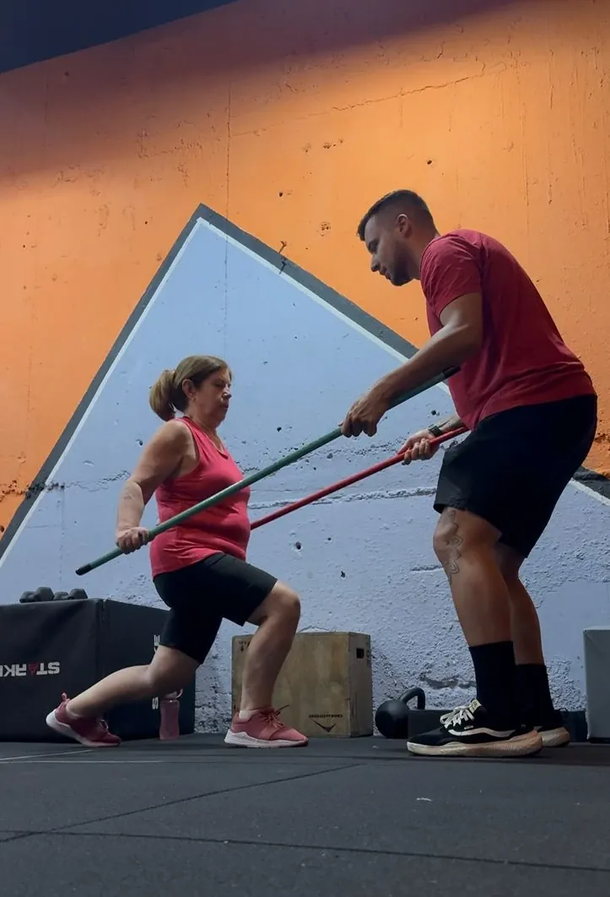
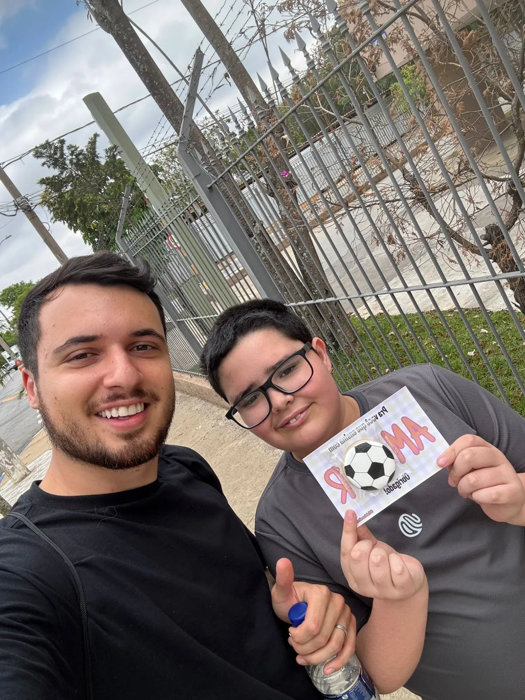
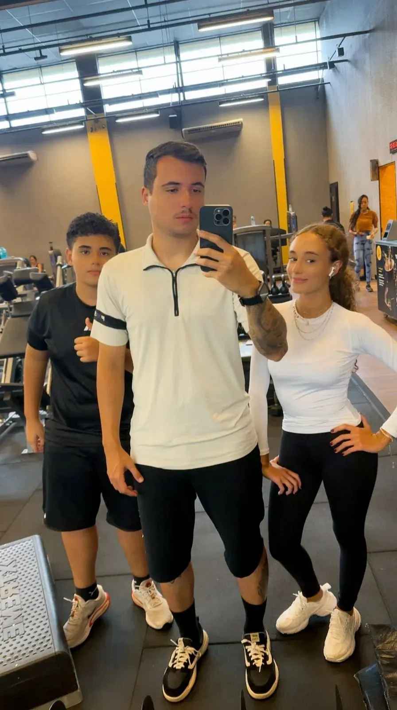

Treinamento especializado para quem busca
autonomia.
Acompanhamento individualizado para resultados reais.
AGENDAR MINHA AVALIAÇÃOSobre mim
Me chamo Gabriel, tenho 25 anos, sou graduado em Educação Física e pós-graduado em Psicomotricidade.
Sou formado desde 2022. Após a graduação, passei um período no exterior, onde adquiri um grande crescimento pessoal e profissional. Desde 2024, atuo de forma dedicada na área de personal trainer.
Atualmente trabalho com todas as faixas etárias, atendendo crianças, adolescentes, adultos e idosos, além de grupos especiais, sempre com treinos personalizados e adaptados aos objetivos e limites de cada aluno.
Também tenho experiência no trabalho com crianças neurodivergentes, utilizando atividades que estimulam o desenvolvimento motor, a coordenação e a autonomia de forma respeitosa e acolhedora.
Atuo em academias e a domicílio.
Sou praticante de atividade física e acredito no movimento como uma ferramenta essencial para promover saúde, bem-estar e qualidade de vida. Meu objetivo é ajudar cada aluno a evoluir no seu próprio ritmo, tornando a prática de exercícios algo consistente, seguro e prazeroso.
Áreas de Atuação
Treinamento técnico e humano adaptado para diferentes fases e necessidades da vida.

Melhor idade
Recupere a liberdade de caminhar e brincar com os netos sem medo de quedas. Foco em musculatura funcional para prevenir quedas e devolver confiança.
-
Fortalecimento ósseo
-
Equilíbrio e Coordenação
-
Prevenção de acidentes

crianças (neurodivergentes)
Inclusão total através da psicomotricidade. Movimento sem limites. Um treino que respeita a individualidade e foca no que você PODE fazer.
-
Estímulo Sensorial
-
Autonomia Funcional
-
Ambiente Lúdico

Adolescentes
Corrija a postura 'do celular' e construa confiança na fase mais importante da vida.
-
Correção de Cifose
-
Técnica Segura de Treino
-
Foco e Disciplina
0
Anos de Experiencia
0
Kgde Gordura Eliminada
0
Alunos
0
%Treino Personalizado
QUEM TREINA, VÊ RESULTADO.
Como Funciona a Consultoria
Mais que um treino, uma consultoria completa no seu espaço seguro.Avaliação Inicial
Conversa para entender suas necessidades, histórico de saúde e limitações específicas.
Plano Adaptado
Criação de um cronograma exclusivo para o seu perfil, seja para longevidade, postura ou inclusão.
Acompanhamento
Treino presencial ou online com foco total na correção técnica e segurança de cada movimento.
Evolução Constante
Reavaliações periódicas para ajustar o nível de desafio e celebrar cada conquista alcançada.
Essa consultoria é para você?
Seja honesto com seus objetivos antes de darmos o próximo passo.
NÃO é para você se:
- ❌ Busca resultados sem esforço ou "atalhos".
- ❌ Não tem compromisso com horários e rotina.
- ❌ Prioriza preço acima de qualidade e saúde.
É para você se:
- ✅ Quer parar de perder tempo na academia.
- ✅ Busca um método validado pela ciência.
- ✅ Está pronto para investir na sua melhor versão.
Diferenciais da Consultoria
Treinamento especializado,
onde você estiver.
Esqueça o trânsito de Guarulhos. Levamos a estrutura profissional até a sua casa ou condomínio para máxima segurança e conforto.
Atendimento Domiciliar
Realizamos a avaliação inicial e todos os treinos diretamente na sua residência ou condomínio. Total privacidade e foco no aluno.
Fuga do Trânsito
Otimizamos seu tempo em Guarulhos. Sem deslocamentos estressantes para você ou sua família, adaptando a agenda à sua rotina.
Suporte Técnico
Correção técnica minuciosa para idosos, adolescentes e PCD. Segurança de academia profissional dentro do seu espaço seguro.
Dúvidas Frequentes
Encontre respostas rápidas sobre nossa consultoria especializada em Guarulhos e como levamos saúde até você.
Onde você atende em Guarulhos?
Eu preciso ter aparelhos de academia em casa?
O treino é seguro para idosos com osteoporose ou dores articulares?
A musculação pode prejudicar o crescimento do meu filho adolescente?
Você atende cadeirantes ou pessoas com mobilidade reduzida?
Treino sob medida
para você.
Acompanhamento individualizado para resultados reais.